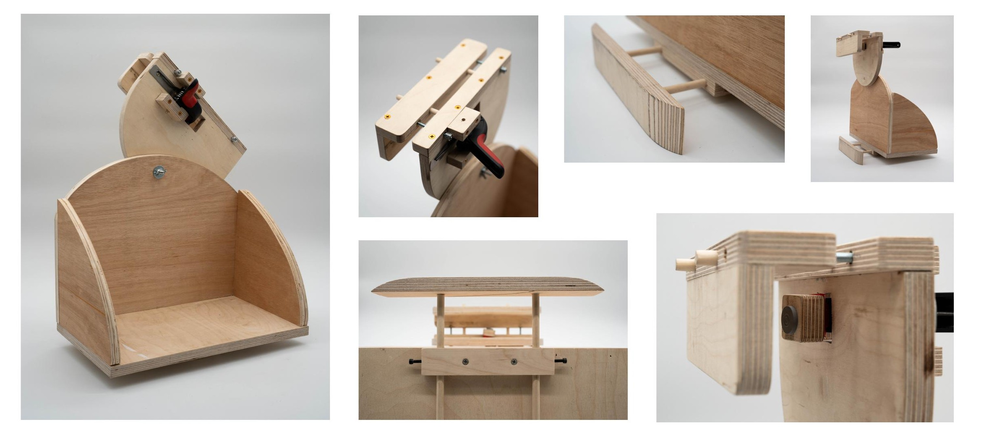
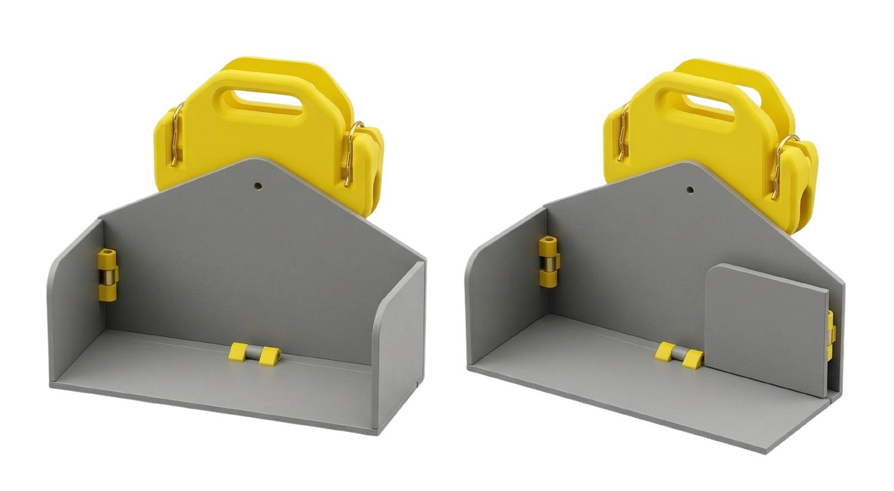

Handrail Helper
Reducing musculoskeletal strain for institutional cleaners on stairs
Brief
Explore cleaning as a profession — working individually with tools and chemicals, and as a unit of people coordinating space hygiene.
Process
Six stages carried the project from brief to a validated prototype:
- Brief set
- Interviews + observations — 8 cleaners interviewed across 5 environments
- Insights + generalisation — physical strain surfaced as the focus
- Concept: the pick — 7 concepts shortlisted to 3
- Concept: Handrail Helper selected
- User validation — tested in-situ with residential and hostel cleaners
We spoke with cleaners and their managers across residential, hostel, and RCA settings, including Facilities Management leads, Head Cleaners, and a live-in cleaner/nanny with 5–17+ years of experience each. Their accounts of stair-carrying — buckets, vacuums, mops, and chemicals hauled by hand, floor after floor — anchored everything that followed.
From insight to opportunity
Three patterns cut across every interview:
- Invisible expertise — cleaning involves diverse skills and risk management across contexts, yet this expertise is flattened and unrecognised within current systems.
- Communication and identity invisibility — language barriers and social dynamics limit cleaners’ ability to communicate, express identity, and be recognised by the communities they serve.
- Invisible strain — physical strain is normalised as part of the job, so early signs of injury go unnoticed until they become critical.
- System neglect — existing systems fail to acknowledge or respond to these hidden conditions, delaying intervention and support.
This pointed to an opportunity: make the invisible conditions of cleaning work visible, so early intervention, appropriate support, and safer systems can be enabled.
Our focus
Cleaners tolerate chronic physical strain as a baseline condition, not a problem to be solved. Pain is invisible until it becomes critical.
How might we make early-stage physical strain legible, to cleaners and their employers, so that action is taken before injury, not after?
Why stairs
- Stairwells must stay clear for fire escape — equipment can’t be left on them and must be carried by hand, every floor, every shift.
- Cleaners normalise the resulting pain as occupational inevitability — Carlos, one of the interviewed cleaners, described coming in with pain or a numb arm and still liking the work.
- Musculoskeletal injury is the leading cause of cleaner sick leave (UK HSE data), accounting for 40%+ of work-related ill health in cleaning, with most cases going unreported until critical.
Proposition: Handrail Helper
What it is — a detachable, self-levelling cradle that clamps to any staircase handrail, holding buckets, vacuums, and cleaning supplies hands-free.
How it works — a size-adjustable clamp grips the rail, while a pivoting, self-levelling platform keeps the load horizontal on any stair gradient.
Who it’s for — institutional cleaners navigating multi-floor buildings in residential, educational, and hospitality settings, where stair load is daily and unavoidable.
Design requirements
Observing what a cleaner’s hands actually carry on a staircase shaped the brief: heavy, liquid-filled buckets carried the full height of the stair run; sprays, cloths and chemicals slung asymmetrically over one shoulder; bulky mop and vacuum equipment dragged off-balance on each step. Form followed that burden:
- Self-levelling platform — bucket contents spill if tilted, and stair angles make this unavoidable without a pivot.
- Adjustable handrail width — the attachment system must adapt to different handrail styles.
- Secure brake by default — load must stay fixed when the cleaner lets go, releasing only on demand.
Prototyping journey

- v0.1 — fixed platform
- v0.2 — self-levelling introduced
- v1.0 — self-levelling platform with a secure braking system
- v1.1 — modular cradle to house a typically-used vacuum cleaner
User testing
Tested with Juliet at Nine Elms Residential, and with Maleah at the Hostel:
What worked
- Self-levelling was well received
- Testers could see value on wider banisters
- The hoover use case was recognised as most relevant
Safety concerns raised
- Unsupervised interaction from non-intended users (guests, children)
- Risk of the unit falling down the stairs and hitting people
- Uncontrolled sliding with heavier loads
Usability concerns raised
- Bag attachment came loose, risking items falling
- The mop bucket didn’t fit the holder
- It marked the surface of a wooden handrail
- Only worked on the middle handrail, not the edge rail
- Thin metal rails were difficult to navigate
Validated iteration

- Holder top changed from curved to chevron to match a 30° handrail angle, reducing material and weight
- Side panel tops made horizontal to hold wiping cloths
- Clamp direction changed to allow one-handed operation and easy attachment
- Fold-able design for convenient storage
Impact
- Reduces daily musculoskeletal load for cleaners in multi-floor buildings
- Validated as intuitive, with low adoption friction
- Deployable by facilities management companies or supplied directly to cleaning contractors
- Mechanical, no power source required — low maintenance cost
- Addresses the gap between individual injury and systemic inaction
Where it sits in the market
Existing options cluster at the extremes: the MIGO Ascender (autonomous, high cost) and vacuum back packs at one end, the BRUTE® Maid Caddy (manual, low cost) at the other. The Handrail Helper sits in the low-cost, manual segment — priced and engineered for everyday adoption rather than a robotics budget.
Hurdles
- Handrail geometry variation across buildings
- Stair configuration and clamping force differ site to site
- Contractor fragmentation — stair cleaning is often outsourced separately, so procurement and liability must be resolved at the institutional level
Future work
- A conforming plate-and-roller concept: springs and hinges rather than adjustment screws, so the mechanism passively adapts to different handrail diameters and profiles
- Rollers to reduce friction, making the device easier to push up the handrail
- BS/CE load-bearing testing, likely in partnership with a facilities supplier, to de-risk rail attachment
- Testing across spiral, split, and narrow staircase typologies
“The tool that carries the cleaner’s load, so they don’t have to.”
Clark & Chalmers asked: where does the mind stop, and the rest of the world begin? We ask: where does the cleaner’s body stop, and their tools begin?